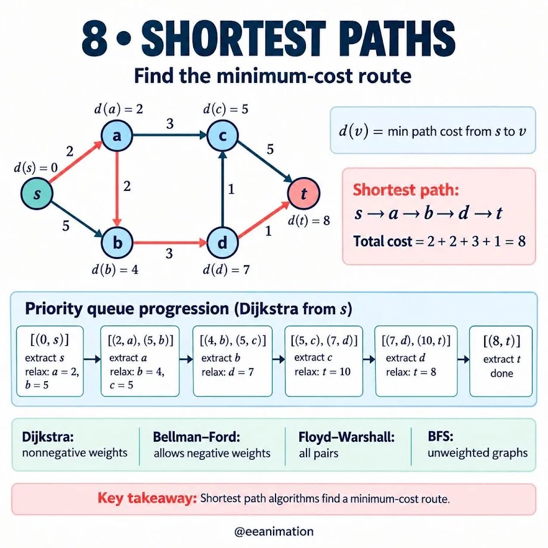

기둥 4 · 가장 좋은 답과 숫자로 보기 · 08장
최단 경로 — 가장 적게 드는 길 찾기
다익스트라의 대기 줄, 그리고 미로 속 너비 우선 탐색
다익스트라의 대기 줄, 그리고 미로 속 너비 우선 탐색
핵심 질문 — 선마다 걸리는 시간이 다를 때, 출발점에서 도착점까지 가장 적게 드는 길은 어떻게 찾을까?
최단 경로는 선의 무게(거리·시간·비용) 합이 가장 작은 길이에요. 무게가 0 이상이면 다익스트라 방법으로, 「지금까지 가장 가까운 점부터 확정하기」를 반복해 구해요. 무게가 모두 같으면(한 네모 = 한 걸음) 더 단순한 너비 우선 탐색(BFS)으로 충분해요.
숫자 요약은 이 장의 예시 계산에서 나온 값입니다(실제 데이터가 아닌 설명용 값).
오늘은 하루의 개인발표예요. 표 한 줄 한 줄을 2조가 검증합니다.
처음으로 혼자 발표해요! 대기 줄 표를 직접 채워 왔어요.
2조는 표의 숫자를 하나씩 다시 계산할게요.
코드·수식을 몰라도 됩니다. 그림을 눌러 움직여 보고, 밑줄 친 말을 누르면 뜻이 나옵니다.
이 페이지 사용법: 밑줄 친 말을 누르면 뜻이 나옵니다(Esc로 닫기). 단계마다 그림을 직접 움직여 보고, 끝의 확인 퀴즈로 점검하세요. 앞 장: 07 매칭과 흐름 — 짝짓기와 실어 나르기
1조 하루가 「내 통학길을 다익스트라로 구해 봤어요」를 개인발표하고, 2조가 표를 한 줄씩 검증해요. 마지막에 X3이 미로 탈출 BFS를 덧붙여요.
다익스트라 방법의 핵심 문장은 하나예요. 「대기 줄에서 가장 가까운 점을 꺼내면, 그 거리는 더 줄어들지 않는다.」
왜 안 줄어요? 나중에 지름길이 나올 수도 있잖아요.
무게가 음수가 아니면, 더 먼 점을 거쳐 돌아오는 길은 지금보다 짧아질 수 없어. 그래서 「무게 0 이상」이 조건이야.
점이 많으면 경로 수가 폭발해요(5장). 다익스트라는 점마다 한 번씩만 확정해서 빠르게 끝나요.
길찾기, 네트워크 라우팅, 게임 이동이 모두 최단 경로예요.
무게가 음수면 다익스트라는 틀린 답을 내요. 방법마다 쓸 수 있는 조건이 달라요.
대기 줄 표가 길어 보여도 매 줄이 같은 일을 반복해요. 첫 두 줄만 손으로 따라 해 보면 나머지는 같은 모양이에요.
처음엔 s → b가 5분이라 b까지 5분인 줄 알았는데, a를 꺼내고 보니 s → a → b가 4분이었어요. 그래서 b를 4로 고쳤어요!
2조 검증! 셋째 줄에서 c를 5로 적었는데, d → c가 1분이니까 7 + 1 = 8로 바뀌지 않아요?
아, 그건 더 길어지니까 안 고쳐요. 고치기는 「더 짧을 때만」이에요. c는 5가 그대로예요.
확인했어요. 여섯 줄 모두 원자료 표와 같아요!
좋아. 그럼 d → t 시간이 9분으로 바뀌면 길이 어떻게 바뀌는지도 실험에서 봐.
상황 질문 — 집에서 학교까지 가는 길이 여러 개예요. 구간마다 걸리는 시간이 다를 때, 지도를 다 그려 보지 않고 가장 빠른 길을 찾을 수 있을까요?
d(b) = min(5, 2 + 2) 같은 식에서 min은 뭐예요?
학교 수학으로 보면: 중학교에서 「두 수 중 작은 것 고르기」예요. min(5, 4) = 4처럼 괄호 안에서 가장 작은 값을 골라요.
| 식 조각 | 읽는 법 | 뜻 |
|---|---|---|
| d(v) | 디 오브 브이 | s에서 v까지 지금까지 찾은 가장 짧은 거리 |
| w(u, v) | 더블유 | u에서 v로 가는 선의 무게 |
| d(v) ← min(d(v), d(u) + w(u, v)) | 거리 고치기 | 새 길이 더 짧을 때만 바꿈 |
s 꺼냄: d(a) = 2, d(b) = 5
a 꺼냄(2): d(b) = min(5, 2 + 2) = 4, d(c) = 2 + 3 = 5
b 꺼냄(4): d(d) = 4 + 3 = 7 → c 꺼냄(5): d(t) = 10 → d 꺼냄(7): d(t) = min(10, 7 + 1) = 8 → t 꺼냄, 끝
선이 4개인 길(8분)이 선 3개인 길(s → b → d → t, 9분)보다 빠르네요. 선 개수가 아니라 무게 합!
대기 줄은 (거리, 점 이름) 짝을 모아 둔 목록이고, 꺼낼 때는 늘 거리가 가장 작은 짝을 꺼내요. 파이썬에서는 이런 줄을 힙(heap)이라는 도구로 빠르게 다뤄요.
「거리 표」는 점 이름마다 숫자 하나를 적은 표예요. 처음에는 출발점만 0이고 나머지는 ∞(아직 모름)예요.
처음 줄: [(0, s)] · 거리 표: s 0, a ∞, b ∞, c ∞, d ∞, t ∞
s를 꺼내고 이웃을 고친 뒤 줄: [(2, a), (5, b)]
a를 꺼낸 뒤 줄: [(4, b), (5, c)] — b의 옛 값 5는 4로 바뀌었어요
표를 직접 손으로 채워 보면, 컴퓨터가 하는 일이 「작은 것 꺼내기와 고치기」의 반복이라는 게 보여요.
통학길 시간을 계산할 때, 집에서 가장 가까운 정류장부터 「여기까지 최단 시간은 이거다」라고 확정하며 넓혀 가요. 더 먼 곳을 돌아오는 길이 이미 확정한 곳을 더 빠르게 만들 수는 없으니까요.
다익스트라 방법은 거리 표 d와 대기 줄(우선순위 큐)을 써요. 줄에서 d가 가장 작은 점을 꺼내 확정하고, 그 점에서 나가는 선으로 이웃의 d를 고쳐요(relax). 무게가 모두 0 이상일 때만 정확해요. 원자료 예시의 최단 경로는 s → a → b → d → t, 길이 8이에요.
「다음 단계」를 한 번씩 눌러 표가 원자료의 여섯 상자와 같은지 비교해 보세요. 그다음 d → t 길이를 바꿔 보세요.
d → t가 9분이 되면 어차피 8분 근처니까 길은 그대로겠죠!
「끝까지」를 다시 눌러 봐. 빨간 길이 어디로 바뀌는지.
원자료 「8 · Shortest Paths」 위쪽 그래프(d(s) = 0 … d(t) = 8)와 Priority queue progression (Dijkstra from s) 여섯 상자.

위 실험을 컴퓨터로 할 때 쓰는 코드 몇 줄이에요. 한 줄마다 뜻을 붙였어요. 읽지 않아도 본문을 따라오는 데 문제없어요.
D.add_edge('s', 'a', weight=2)nx.dijkstra_path(D, 's', 't')nx.dijkstra_path_length(D, 's', 't')import heapq상황 질문 — 바둑판 같은 미로에서 한 네모 움직이는 데 모두 1초가 걸려요. 출발에서 도착까지 몇 걸음이 최소일까요?
왜 처음 닿았을 때가 최단이에요? 나중에 더 짧은 길로 닿을 수도 있잖아요?
학교 수학으로 보면: 중학교 「규칙 찾기」로 볼 수 있어요. k걸음 네모를 모두 본 다음에야 k + 1걸음 네모를 보니, 더 적은 걸음으로 닿는 길이 있었다면 이미 그 전에 닿았을 거예요.
| 식 조각 | 읽는 법 | 뜻 |
|---|---|---|
| d(v) = k | — | 출발에서 k걸음에 처음 닿은 네모 |
| k → k + 1 | — | k걸음 네모의 이웃 중 처음 보는 네모가 k + 1걸음 |
| 줄(큐) | — | 먼저 들어온 네모를 먼저 꺼내는 줄 (번호표 순서) |
빈 마당 12 × 7: S(왼쪽 위)에서 G(오른쪽 아래)까지 11 + 6 = 17걸음
벽 하나: 벽을 돌아가느라 17걸음보다 늘어날 수 있어요
완전히 막힘: G에 닿는 네모가 없음 → 서로 다른 연결 요소(3장)
물결이 한 겹씩 퍼지니까 먼저 닿은 겹이 곧 가장 가까운 거리네요!
연못에 돌을 던지면 물결이 한 겹씩 퍼져요. 어떤 지점에 물결이 처음 닿는 시간이 그 지점까지의 거리예요. 미로 탈출도 마찬가지로 가까운 네모부터 한 겹씩 넓혀 가요.
너비 우선 탐색(BFS)은 무게가 모두 같은 그래프에서 출발점부터 한 걸음, 두 걸음… 순서로 점을 방문해 최단 걸음 수를 구해요. 다익스트라의 특별한 경우로 볼 수 있어요. 원자료 표에서 「BFS: 무게 없는 그래프」라고 적힌 이유예요.
네모를 눌러 벽을 세우거나 허물어 보세요. 걸음 수 색이 어떻게 퍼지나요?
벽이 많으면 길도 많아지니까 더 빨리 갈 수 있겠죠!
「완전히 막힘」을 눌러 봐. 벽이 길을 만들 수는 없어. 막을 뿐이야.
원자료 아래 표 Dijkstra · Bellman–Ford · Floyd–Warshall · BFS.
위 실험을 컴퓨터로 할 때 쓰는 코드 몇 줄이에요. 한 줄마다 뜻을 붙였어요. 읽지 않아도 본문을 따라오는 데 문제없어요.
from collections import dequenx.shortest_path_length(G, 'S', 'G')nx.grid_2d_graph(7, 12)2조 모아가 AI에게 원자료 그래프를 주고 「s에서 t까지 가장 빠른 길」을 물었어요.
AI가 길을 추천하면 그 길의 무게를 직접 더해 보세요. 덧셈 한 번이 가장 확실한 확인이에요.
1조 조장은 구간이 적은 길을, 2조 조장은 하루의 표를 믿었어요. 심판은 다익스트라로 계산해 판정합니다.
「8. 하루 표의 마지막 줄이야.」
「s → b → d → t, 구간 3개짜리가 제일 빠르니 9예요!」
누가 맞을지 먼저 예상해 보고 단추를 누르세요. 심판 박사는 계산 결과로만 판정합니다.
개념정리 흐름: 다익스트라 최단 경로 → 너비 우선 탐색(BFS)
| 개념 | 한 줄 뜻 | 일상 비유 | 비유의 한계 |
|---|---|---|---|
| 최단 경로 | 무게 합이 가장 작은 경로 | 가장 빠른 통학길 | 무게 데이터가 바뀌면 답도 바뀜 |
| 다익스트라 | 가장 가까운 점부터 확정 + 거리 고치기 | 가까운 곳부터 도장 찍기 | 음수 무게에서는 틀릴 수 있음(벨만–포드) |
| 너비 우선 탐색 | 한 겹씩 퍼지며 걸음 수 세기 | 연못의 물결 | 무게가 모두 같을 때만 최단 보장 |
조장 대결은 2조 승, 그리고 하루의 첫 발표는 대성공이에요.
표를 끝까지 채우니까 8이 저절로 나왔어요!
구간이 적으면 빠를 줄 알았는데… 더하기부터 할게요.
다음 장 예고: 09장(심화)은 상담과 졸업 조별발표예요. 그래프를 숫자 줄(고윳값)로 바꿔 「모양의 지문」을 보고, 반 친구 관계에서 무리를 찾아요.